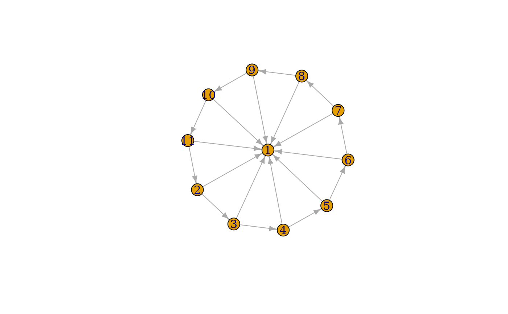

This function can be used to add or delete edges that form a path.
Value
A special object that can be used together with igraph graphs and the plus and minus operators.
Details
When adding edges via +, all unnamed arguments are
concatenated, and each element of a final vector is interpreted
as a vertex in the graph. For a vector of length \(n+1\), \(n\)
edges are then added, from vertex 1 to vertex 2, from vertex 2 to vertex
3, etc. Named arguments will be used as edge attributes for the new
edges.
When deleting edges, all attributes are concatenated and then passed
to delete_edges().
See also
Other functions for manipulating graph structure:
+.igraph(),
add_edges(),
add_vertices(),
complementer(),
compose(),
connect(),
contract(),
delete_edges(),
delete_vertices(),
difference(),
difference.igraph(),
disjoint_union(),
edge(),
igraph-minus,
intersection(),
intersection.igraph(),
permute(),
rep.igraph(),
reverse_edges(),
simplify(),
union(),
union.igraph(),
vertex()
Examples
# Create a (directed) wheel
g <- make_star(11, center = 1) + path(2:11, 2)
plot(g)

g <- make_empty_graph(directed = FALSE, n = 10) %>%
set_vertex_attr("name", value = letters[1:10])
g2 <- g + path("a", "b", "c", "d")
plot(g2)
g3 <- g2 + path("e", "f", "g", weight = 1:2, color = "red")
E(g3)[[]]
#> + 5/5 edges from 10b0a3b (vertex names):
#> tail head tid hid weight color
#> 1 a b 1 2 NA <NA>
#> 2 b c 2 3 NA <NA>
#> 3 c d 3 4 NA <NA>
#> 4 e f 5 6 1 red
#> 5 f g 6 7 2 red
g4 <- g3 + path(c("f", "c", "j", "d"), width = 1:3, color = "green")
E(g4)[[]]
#> + 8/8 edges from dcfd41f (vertex names):
#> tail head tid hid weight color width
#> 1 a b 1 2 NA <NA> NA
#> 2 b c 2 3 NA <NA> NA
#> 3 c d 3 4 NA <NA> NA
#> 4 e f 5 6 1 red NA
#> 5 f g 6 7 2 red NA
#> 6 c f 3 6 NA green 1
#> 7 c j 3 10 NA green 2
#> 8 d j 4 10 NA green 3